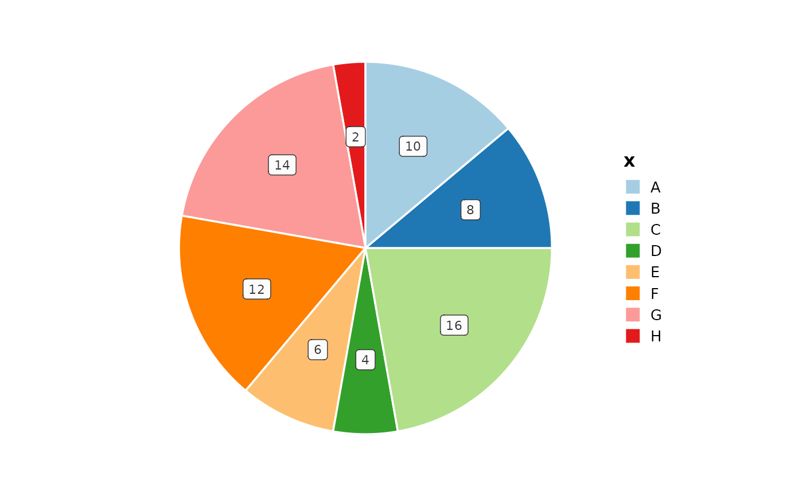
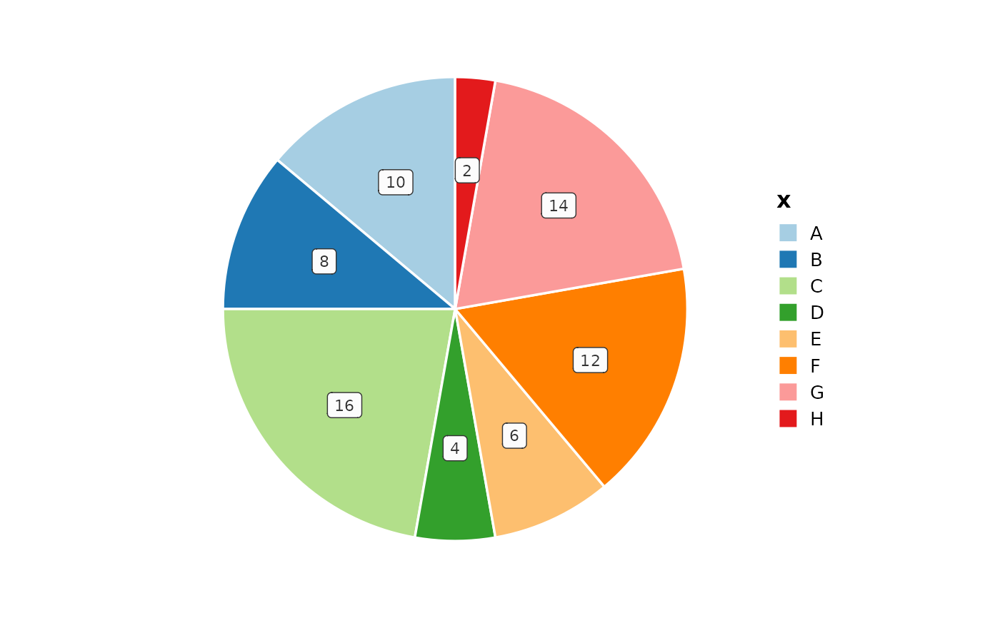
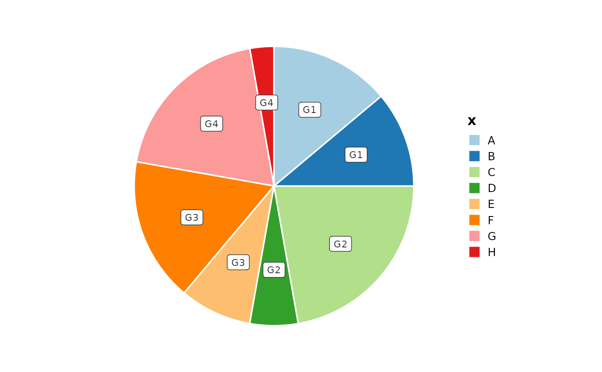
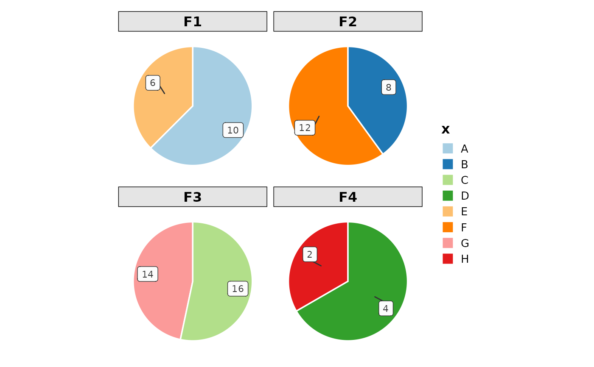
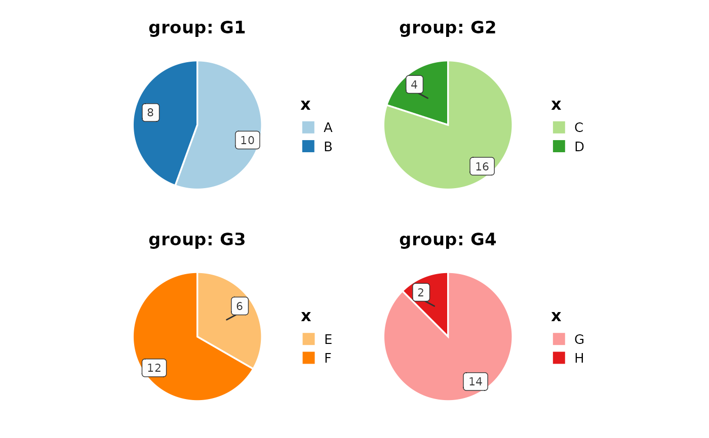
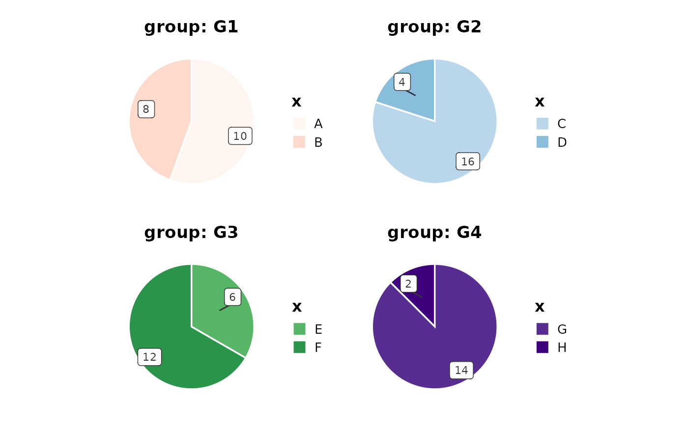
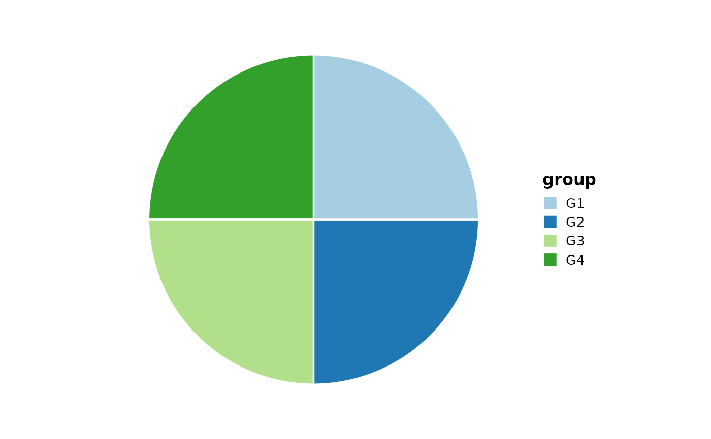

Creates pie charts to illustrate numerical proportion of each group. Supports splitting by groups, faceting, and custom color palettes.
Usage
PieChart(
data,
x,
y = NULL,
label = y,
split_by = NULL,
split_by_sep = "_",
clockwise = TRUE,
facet_by = NULL,
facet_scales = "free_y",
facet_ncol = NULL,
facet_nrow = NULL,
facet_byrow = TRUE,
theme = "theme_ggforge",
theme_args = list(),
palette = "Paired",
palcolor = NULL,
alpha = 1,
aspect.ratio = 1,
legend.position = "right",
legend.direction = "vertical",
title = NULL,
subtitle = NULL,
xlab = NULL,
ylab = NULL,
keep_empty = FALSE,
combine = TRUE,
nrow = NULL,
ncol = NULL,
byrow = TRUE,
seed = 8525,
axes = NULL,
axis_titles = axes,
guides = NULL,
design = NULL,
...
)Arguments
- data
A data frame
- x
Column name for categories. Will be converted to factor.
- y
Column name for values. If NULL, counts will be used.
- label
Column to use for labels. Default is same as y. If y is NULL, use ".y" to specify counts as labels.
- split_by
Column(s) to split the data by, creating separate plots. Multiple columns will be concatenated with split_by_sep.
- split_by_sep
Separator for concatenating multiple split_by columns.
- clockwise
Whether to draw pie chart clockwise (default: TRUE)
- facet_by
Column(s) to facet by (max 2 columns).
- facet_scales
Scale type for facets: "fixed", "free", "free_x", or "free_y"
- facet_ncol
Number of columns for faceting.
- facet_nrow
Number of rows for faceting.
- facet_byrow
Whether to fill facets by row.
- theme
Theme name or function. Default is "theme_ggforge".
- theme_args
List of arguments to pass to the theme function.
- palette
Color palette name. Default is "Paired".
- palcolor
Custom colors (overrides palette).
- alpha
Transparency level (0-1). Default is 1.
- aspect.ratio
Aspect ratio of the plot. Default is 1.
- legend.position
Legend position ("none", "left", "right", "bottom", "top").
- legend.direction
Legend direction ("horizontal" or "vertical").
- title
Plot title. Can be a string or function.
- subtitle
Plot subtitle.
- xlab
X-axis label.
- ylab
Y-axis label.
- keep_empty
Keep empty factor levels.
- combine
Whether to combine plots when split_by is used.
- nrow
Number of rows when combining plots.
- ncol
Number of columns when combining plots.
- byrow
Whether to arrange plots by row when combining.
- seed
Random seed for reproducibility. Default is 8525.
- axes
Axis handling when combining plots.
- axis_titles
Axis title handling when combining plots.
- guides
Guide handling when combining plots.
- design
Custom design for combining plots.
- ...
Additional arguments (currently unused).
Examples
# Create sample data
data <- data.frame(
x = c("A", "B", "C", "D", "E", "F", "G", "H"),
y = c(10, 8, 16, 4, 6, 12, 14, 2),
group = c("G1", "G1", "G2", "G2", "G3", "G3", "G4", "G4"),
facet = c("F1", "F2", "F3", "F4", "F1", "F2", "F3", "F4")
)
# Basic pie chart
PieChart(data, x = "x", y = "y")

# Counter-clockwise
PieChart(data, x = "x", y = "y", clockwise = FALSE)

# With labels
PieChart(data, x = "x", y = "y", label = "group")

# With faceting
PieChart(data, x = "x", y = "y", facet_by = "facet")

# Split by group
PieChart(data, x = "x", y = "y", split_by = "group")

# Custom palettes per split
PieChart(data,
x = "x", y = "y", split_by = "group",
palette = list(G1 = "Reds", G2 = "Blues", G3 = "Greens", G4 = "Purples")
)

# Use counts (y from count)
PieChart(data, x = "group")

# With count labels
PieChart(data, x = "group", label = ".y")